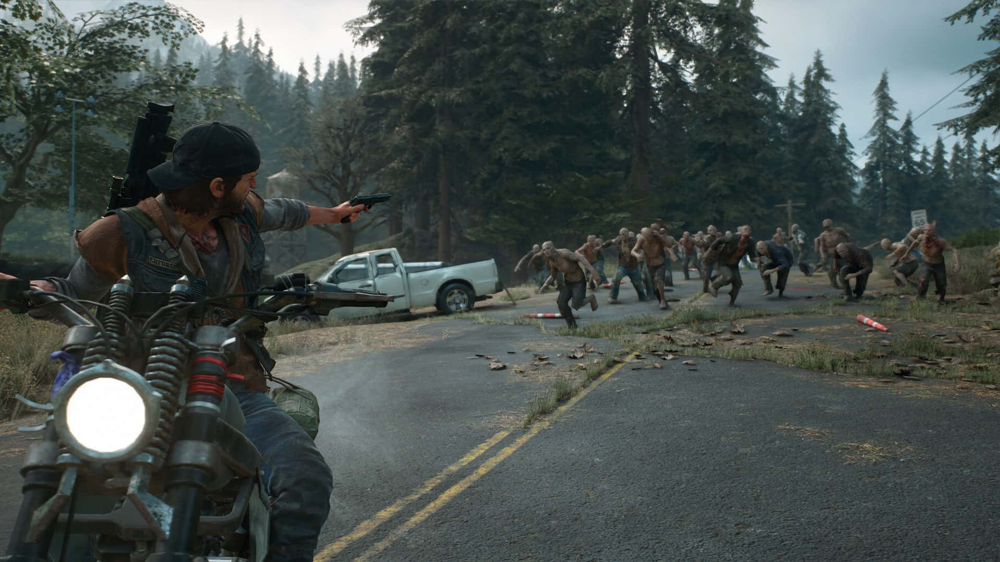

In Whispering Dead, players face a multitude of threats that test their survival skills and adaptability. The world is filled with dangers, both undead and human, that require careful navigation and strategic thinking. As players explore the environment, they must remain vigilant and aware of their surroundings to stay alive. Each encounter has the potential to change the course of the game, and understanding these threats is crucial to achieving success in this unforgiving landscape.

Environmental Challenges
The game features two distinct types of zombies: runners and walkers. Runners are fast, aggressive, and highly perceptive, making them a formidable threat when they become agitated. Their erratic behavior can catch players off guard, leading to intense chase sequences where quick reflexes are essential for survival. Walkers, on the other hand, are slower but can overwhelm players with their sheer numbers. Their persistence means that players must carefully plan their movements, using stealth and strategy to avoid being surrounded. The challenge lies in distinguishing between the two types before they become aggressive, adding an element of tension to every encounter. Players must learn the behaviors and sounds associated with each type to navigate this perilous world effectively.